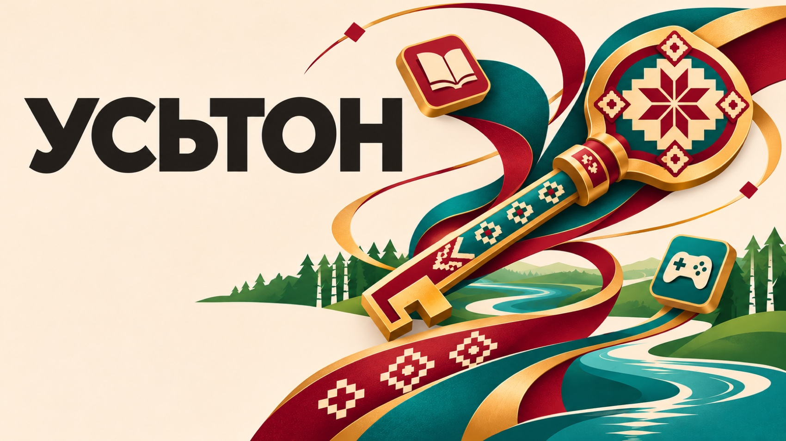
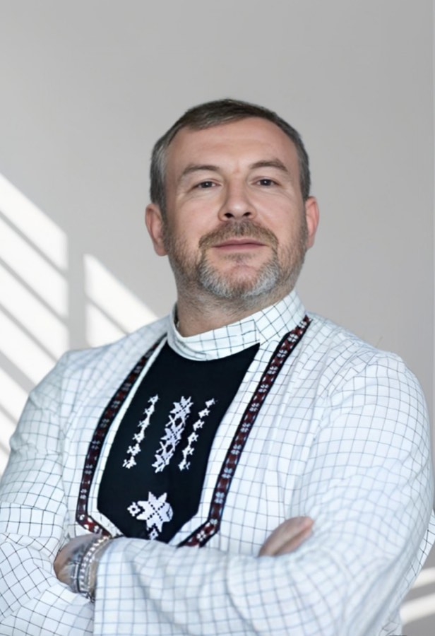
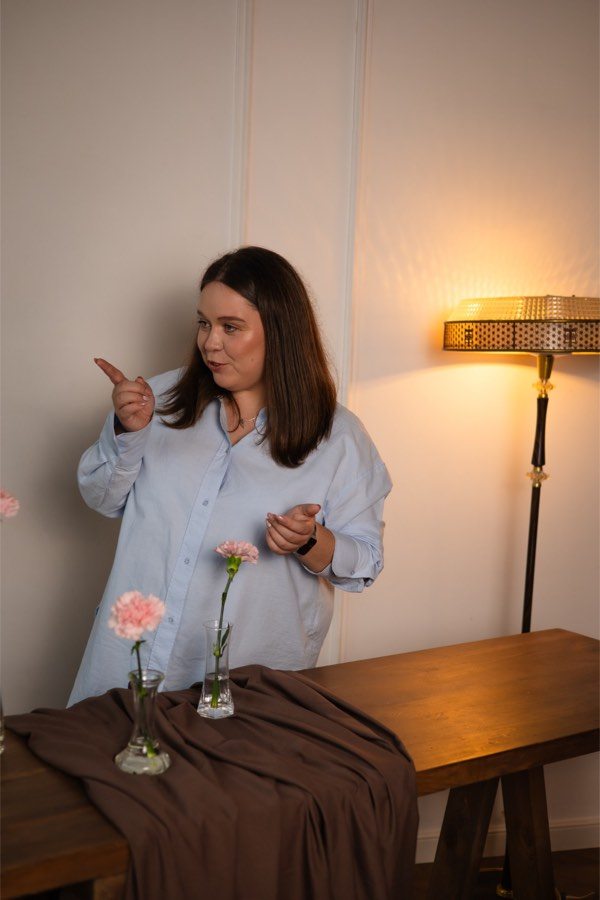

Рабочая версия · В разработке. Материалы доступны для знакомства и пробного использования. Содержание и оформление обновляются.

Усьтон
Удмуртский язык. Игры. Истории.
Рабочая версия · пространство развивается
✧Усьтон · язык, культура и истории
Выбери занятие
Учиться
ДышетскыныУчиться
Узнавай новые слова и закрепляй то, что уже знаешь.
Отдыхать
ШутэтскыныОтдыхать
Выбирай игру для отдыха и играй в своём темпе.
Истории и язык
Внутри каждой истории есть последовательность. Между занятиями можно свободно переключаться.
Твои открытия
Карточки и достижения собираются в твоём пространстве игрока.
Профиль и общий счёт сохраняются в этом браузере. Игры работают без регистрации. На другом устройстве будет отдельный профиль.
Люди за проектом

Александр Владимирович Катков
Педагог, аранжировщик, руководитель студии эстрадной песни «Выль крезьгур». Соавтор образовательных разработок.
Подробнее об авторе
С 2026 года работает в АУК УР «Республиканский дом народного творчества» в Ижевске: руководит оркестром, ведёт творческую студию и участвует в концертах, в том числе в «квартирниках» РДНТ.
Более 20 лет работал в сфере образования, в том числе в Удмуртской государственной национальной гимназии имени Кузебая Герда — до 2026 года.
Автор методических разработок по работе с удмуртским языком в вокале, участник и организатор фестивалей и проектов по сохранению удмуртской культуры. Среди наград — благодарственное письмо ГУ МЧС по Удмуртии за работу с детьми.

Дарья Константиновна Шиляева
Преподаватель языков, тьютор и разработчик образовательных материалов. Соавтор образовательного пространства.
Подробнее об авторе
Работает с детьми и взрослыми, занимается сопровождением обучения, семейным образованием и методическим проектированием. Имеет опыт преподавания и образовательной работы в Португалии, в том числе с детьми, для которых язык обучения не является родным.
Профессиональные интересы — многоязычное образование, индивидуальные образовательные траектории и применение интерактивных материалов для знакомства с удмуртским языком, культурой и литературой.
Окончила бакалавриат по политологии и международным отношениям в Universidade Católica Portuguesa, Лиссабон. Проходила дополнительную подготовку по тьюторскому сопровождению, методической работе и преподаванию английского языка.
Образовательное пространство
На портале объединены десять игр, самоучитель «Лето в удмуртской деревне» и визуальная новелла «Старый Мултан». В играх используются изображения, текст, доступная озвучка, подсказки и обратная связь.
В пространстве также доступны самоучитель «Лето в удмуртской деревне» (пять глав и словарь) и визуальная новелла «Старый Мултан» (три главы). Все материалы развиваются и дорабатываются.
Как устроено обучение
Язык в действии и в контексте
Методическое проектирование — Дарья Константиновна Шиляева. Материалы учитывают разный языковой опыт: знакомство с удмуртским в семье не всегда означает одинаковую готовность к чтению, аудированию и самостоятельному высказыванию. Подсказки, повторное прослушивание и короткие задания дают дополнительные опоры при работе с содержанием.
Эта позиция изложена в авторском тексте Д. К. Шиляевой «Педагогические ожидания и языковой репертуар обучающихся: к вопросу о преподавании удмуртского языка». В подборке ниже приведены исследования, к которым обращается автор, и источники отдельных проектов.
Понимание → действие
Участник связывает слово или реплику с изображением, выбирает ответ, восстанавливает слово либо выполняет задание. Поддержка подбирается к задаче: картинка, перевод, доступная озвучка, повторная попытка.
Воспроизведение и возвращение
В «Мы сеем» нужно самостоятельно восстановить написание. Общий словарь собирает встреченные слова из разных занятий; к ним можно вернуться отдельно от сюжета. Наличие слова в словаре не означает проверенного владения им.
Обратная связь
Правильность ответа показывается во время задания. В игре со словами помощь доступна по запросу; её использование учитывается отдельно от самостоятельного выполнения.
Разные задачи — разные результаты
Языковые задания, чтение, работа с картой и игры на память требуют разных действий. Игровые баллы, рекорды, опыт и открытия сохраняются как отдельные показатели.
Самоучитель «Лето в удмуртской деревне»
Ребёнок приезжает в деревню к бабушке и дедушке и встречает говорящего кота. Языковой материал появляется в бытовых ситуациях: знакомство, семья, дом, одежда, помощь по хозяйству. В опубликованной версии доступны первые пять глав; продолжение разрабатывается.
Сюжетная последовательность
Диалоги задают ситуацию, а задания требуют обратиться к словам из этой ситуации. Выбор героя и ответов помогает участнику действовать от лица персонажа.
Лексика и языковые формы
В истории встречаются приветствия, личные местоимения, названия предметов и конструкции принадлежности. Слова добавляются в личный словарь по мере появления в репликах.
Опоры и закрепление
Изображения и русский текст помогают понять ситуацию. Внутри самоучителя доступны словарь и упражнения на соотнесение и составление слов. Звуковые материалы используются там, где они уже подготовлены.
Развитие программы
Дальнейший сценарный план включает природу, животных, покупки, игры, школьную и праздничную жизнь, рассказ о проведённом лете. Это план развития, а не перечень уже опубликованных уроков.
Автор образовательного проектирования — Д. К. Шиляева. Языковые формулировки и культурные детали проходят редакторскую вычитку.
Визуальная новелла «Старый Мултан»
Литературная основа — роман Михаила Петрова «Старый Мултан»; в проектной работе используется русское издание: Ижевск, «Удмуртия», 1995. Новелла предназначена для сопровождения чтения и обсуждения произведения, в том числе в будущей программе для 10–11 классов.
Чтение по сценам
Реплики и повествование организованы в последовательные эпизоды. Иллюстрации помогают удерживать место действия и участников, а вопросы возвращают к поступкам, мотивам и позиции рассказчика.
Обсуждение с опорой на текст
Образовательные вопросы требуют искать основания ответа в произведении. Их можно использовать для самостоятельной работы и читательского клуба.
Роман и исторический документ
Художественные события, слова персонажей и документальная история Мултанского дела рассматриваются раздельно. Реплика героя не становится историческим фактом только потому, что появилась в новелле.
Точность адаптации
Фабула произведения сохраняется. Интерактивность организует чтение и обсуждение, но не меняет исход исторического дела. Быт, костюм и локации сверяются с текстом и дополнительными источниками.
Автор романа — Михаил Петров. Образовательная адаптация и сценарное проектирование — Д. К. Шиляева. Исторический контекст: М. В. Осипова, НИУ ВШЭ, 2024; музейные материалы Национального музея Удмуртской Республики и другие проверяемые источники.
Как работают остальные занятия
Лексика и понимание речи
«Мы сеем» — восстановление слов; «Кин та?» — выбор персонажа по описанию; «Семья» — родственные связи; «Дас витяшки» — числовой ряд и удмуртские названия чисел.
Культура и пространство
«Шудон» — поиск пар с подписями и справками о предметах; «Чупрес туп» — открытие и узнавание орнаментов; «Открываем Удмуртию» — карта районов, города и справочные карточки.
Игры для отдыха
«Удмурт ӟечок» — соединение одинаковых изображений линиями. «Пельнянь но перепеч» и «Бены и Боны» предлагают самостоятельную или совместную игру. Их результаты не являются проверкой языкового уровня.
Общий словарь
Словарь объединяет встреченные слова и выражения, сохраняет связь с занятиями и позволяет искать по удмуртскому написанию и русскому значению. Отдельные тренировки общего словаря пока не добавлены.
Источники и авторы
Исследования ниже служат ориентирами для проектирования. Они не доказывают эффективность именно этой версии портала. Список дополнен материалами, которые удалось восстановить и сверить; полная исходная авторская подборка самоучителя ещё требует переноса.
Ellis, R., & He, X. (1999). The roles of modified input and output in the incidental acquisition of word meanings. Studies in Second Language Acquisition, 21(2), 285–301. Публикация издателя ↗
Gass, S. M. (1997).Input, Interaction, and the Second Language Learner. Lawrence Erlbaum Associates. Страница переиздания ↗
Gilmore, A. (2007). Authentic materials and authenticity in foreign language learning. Language Teaching, 40(2), 97–118. DOI ↗
Rubie-Davies, C. M. (2007). Classroom interactions: Exploring the practices of high- and low-expectation teachers. British Journal of Educational Psychology, 77(2), 289–306. DOI ↗
Karpicke, J. D., & Roediger, H. L. (2008). The Critical Importance of Retrieval for Learning. Science, 319(5865), 966–968. DOI ↗
Mayer, R. E. (2003). The promise of multimedia learning: using the same instructional design methods across different media. Learning and Instruction, 13(2), 125–139. DOI ↗
Shute, V. J. (2008). Focus on Formative Feedback. Review of Educational Research, 78(1), 153–189. DOI ↗
Коткова А. В. (2019). Проектная задача как средство формирования коммуникативных универсальных учебных действий на уроках удмуртского языка как неродного. Полный текст в журнале ↗
Осипова М. В. (2024). Удмурты в паутине гегемонных дискурсов: открывая Мултанское дело позднеимперской России. Магистерская ВКР, НИУ ВШЭ. Карточка работы и аннотация ↗
Виноградов С. Н. (1973). Удмуртские народные узоры и значение их названий // Об удмуртском фольклоре и литературе. Вып. I. С. 26–40. Электронная публикация текста ↗
Это игровой показатель выполнения заданий с учётом помощи и ошибок, а не отметка за предмет или оценка уровня владения языком.
«Мы сеем»: до 1 балла за слово, −0,5 за текстовую подсказку и −0,1 за каждую открытую кнопкой букву. Самостоятельно угаданные буквы не уменьшают результат. Минимум за слово — 0.
«Кин та?»: в общем счёте сохраняется лучший результат каждого этапа — до 1 балла. Правильный ответ без ошибок даёт 1; после ошибочного выбора результат этапа для общего счёта — 0. Этап можно пройти заново и улучшить результат. Внутри текущего прохождения сохраняется собственный счёт игры.
«Удмурт ӟечок»: 100 игровых очков дают 1 общий балл. Сохраняется лучший результат, максимум 10 общих баллов; повторение меньшего или равного результата не увеличивает общий счёт.
«Чупрес туп»: по 1 баллу за каждый открытый орнамент и за каждое самостоятельное узнавание. Максимум 40. Игровые очки арканоида хранятся отдельно; повторения не увеличивают общий балл.
Общий максимум — 106 баллов: 50 за «Мы сеем», 6 за «Кин та?», 10 за «Удмурт ӟечок» и 40 за «Чупрес туп». Повтор одного и того же результата не добавляет баллы повторно.
Моё пространство
ID:
Уровень игрока 1
Новый уровень — каждые 100 единиц опыта. Пропуски дней ничего не отнимают.
Слов в словаре
0
Орнаментов
0
Узнано самостоятельно
0
Мои достижения
Мой словарь
0 слов и выражений
Слова из самоучителя и игр собираются здесь по мере знакомства с ними.
Начни занятие — здесь появятся слова.
Моя коллекция орнаментов
Карточки из игры «Чупрес туп». К ним можно возвращаться в любое время.
Перенести сохранение
Скачай файл на одном устройстве и загрузи на другом. Это ручной перенос — автоматическая синхронизация аккаунта пока не подключена.
Файл содержит имя игрока и результаты. Не публикуй его в открытом доступе. Незаконченные раунды и счёт текущей партии вдвоём не переносятся.
Мои истории
Лето в удмуртской деревне
Старый Мултан
Место остановки сохраняется внутри каждого приложения. За открытие новой истории начисляется опыт знакомства; учебные баллы за чтение пока не назначаются.
Баллы по играм
0 / 106
Игра
Баллы
Максимум
Мы сеем
0
50
Кин та?
0
6
Удмурт ӟечок
0
10
Чупрес туп
0
40
Открываем Удмуртию
—
—
Пельнянь но перепеч
—
—
Семья
—
—
Дас витяшки
—
—
Бены и Боны
—
—
Шудон
—
—
Лето в удмуртской деревне
—
—
Старый Мултан
—
—
Семья: 0 из 20 историй.
Дас витяшки: рекордов пока нет.
Бены и Боны: рекорд стиля — 0.
Шудон: рекордов пока нет.
Общие баллы начисляются в заданиях с утверждёнными правилами подсчёта. Для остальных занятий показаны прогресс или рекорд.
Где хранятся данные
Случайный ID, имя и результаты хранятся только в этом браузере на этом сайте. Отпечаток устройства не собирается, данные не отправляются на сервер.
Другой браузер или устройство получит отдельный профиль. Очистка данных сайта или приватный режим могут удалить сохранение. Автоматическая синхронизация аккаунта пока не подключена. Для ручного переноса доступен файл сохранения.
Открываем игру…
Рабочая версия · Игра дорабатывается. Результаты завершённых заданий сохраняются в этом браузере.